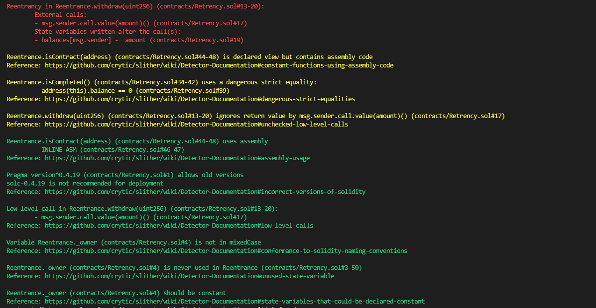
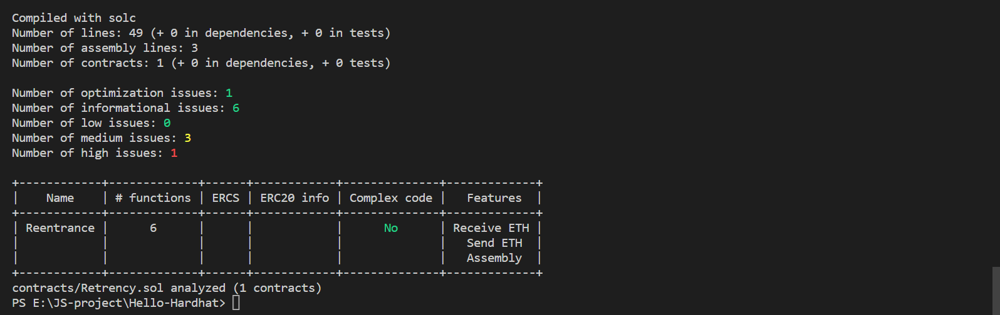
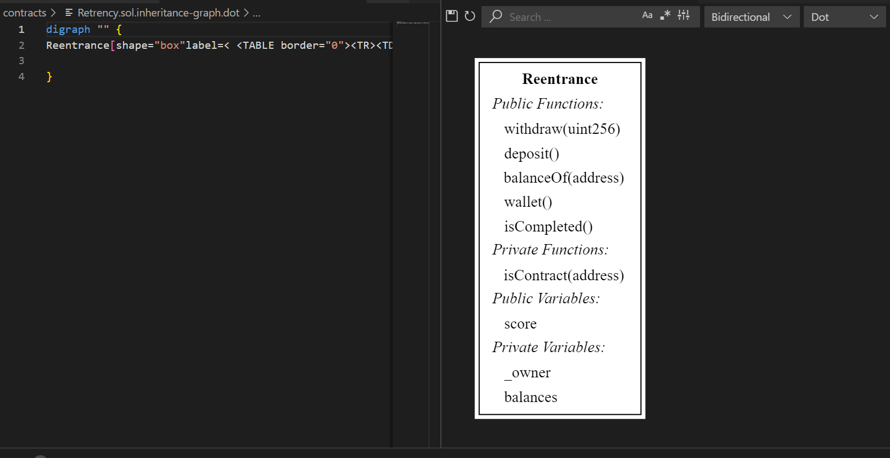
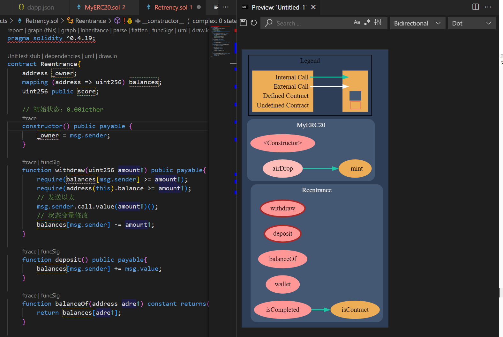
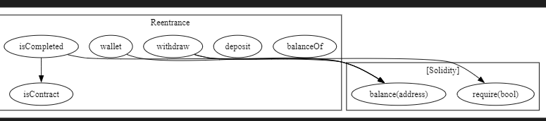
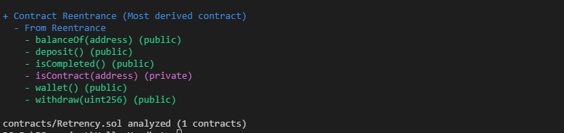

author：Thomas_Xu
slither工具使用记录
最近对静态分析很感兴趣，先从工具入手，今天先试一试Slither—一款静态智能合约分析工具。
概述
slither使用python3编写的智能合约静态分析框架，整体环境比较好，提供如下功能：
- 自动化漏洞检测。提供超60多项的漏洞检查模型，模型列表详见：https://github.com/crytic/slither#detectors 。
- 自动优化检测。Slither可以检测编译器遗漏的代码优化项并给出优化建议。
- 代码理解。Slither能够绘制合约的继承拓扑图，合约方法调用关系图等，帮助开发者理解代码。
- 辅助代码审查。用户可以通过API与Slither
- 进行交互。
使用
安装
Slither支持pip、源码编译和docker三种安装方式。 pip安装
1 | pip3 install slither-analyzer |
源码编译
1 | $ git clone https://github.com/crytic/slither.git && cd slither |
docker安装
1 | docker pull trailofbits/eth-security-toolbox |
在安装时，会有大量的依赖安装，这里建议使用pip的方式安装，不容易出错
合约漏洞检测
我准备了一个重入代码，直接上手试试：
1 | pragma solidity ^0.4.19; |
执行slither contracts/Reentrance.sol 在truffle或hardhat框架下运行，会自动拉去框架下的编译器版本。
否则建议下载solc-select，以便 Slither 可以自动切换到预期的 solc 版本。
结果如下：

可以看到输出结果是比较详尽的，会告诉你在多少行出现了重入漏洞。
他也会提醒你有一些编程习惯上的问题，跟着他的提示改可以很好的优化自己的代码，甚至减少gas。
slither还有很多很多好用的工具，这里列举几个
human-summary
我们还可以使用slither contracts/Reentrance.sol --print human-summary命令来提高slither的可读性

这样是不是就有点像一个简单版的审计报告了。
inheritance-graph
还可以通过slither为我们生成一个继承图，可以帮我们理清合约中的关系（个人认为这个工具不如其他的插件做的好）
slither contracts/Retrency.sol --print inheritance-graph

上图是slither为我们生成的graph，下图是使用: Solidity Visual Developer生成的graph，在代码量很大时非常有用。

call-graph
也可以使用slither contracts/Retrency.sol --print call-graph来为我们生成call-graph（会生成两张）

contract-summary
合约变量函数一揽，也可以使用function-summary（输出会更详细一点）

更多的功能可以查看Printer documentation · crytic/slither Wiki (github.com)
工具
slither-check-upgradeability：查看基于委托调用的可升级性slither-prop：自动单元测试和属性生成slither-flat：平展代码库slither-check-erc：检查 ERC 的一致性slither-format：自动生成补丁slither-read-storage：从合约中读取存储值
有关其他工具，请参阅工具文档。

true

...
...
This is copyright.